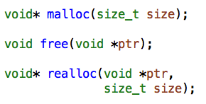
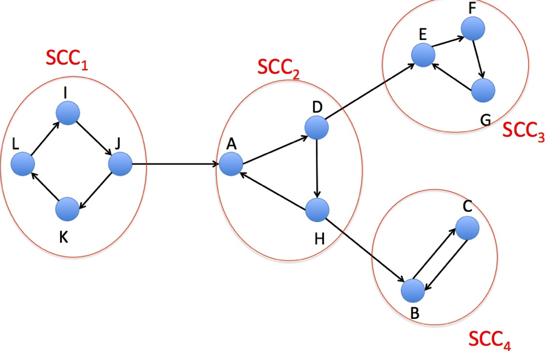
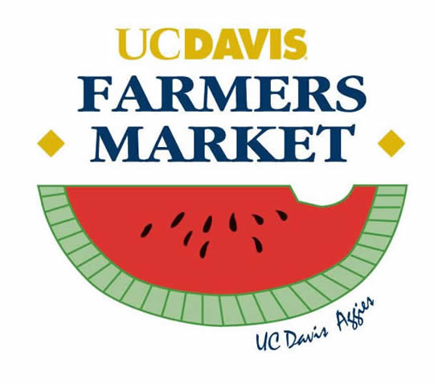
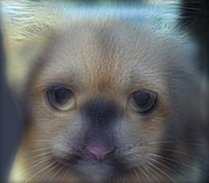
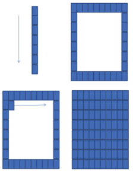

Research Projects
- Heap Allocator, Stanford CS 107 Course Project, Siyu Yang, Shan Lu(August 2014) [ Report ][ C code ]
- DESCRIPTION: Heap Allocator is one of the most famous labs given in the CSAPP text, which requires us to write our own malloc, free and realloc functions. After the failure on Buddy's System approach, we successfully implemented a modified version based on implicit list design. Our heap allocator outperforms the full credit line by 32% and 15% in terms of utilization and throughput, respectively.
 -
Finding Strongly Connected Components and their Properties, Stanford CS 161 Course Project, Shan Lu, Yifei Yang(August 2014) [ Report ][ C++ ][ Python ]
- DESCRIPTION: In this project we implemented an iterative version of Trajan's algorithm to find strongly connected components in directed graphs. In the report, properties such as degree of distribution, SCC diameters are further explored.
 -
Study of United States Local Food Market--a field study in Davis, Undergraduate Thesis, Shan Lu(March - May 2014) [ Paper ][ Slides of Thesis Defense ]
- ABSTRACT: Local food market is an innovative form of agricultural product market, which emphasizes a tighter geographical and social relationship between producers and consumers. This article introduces the development of local food market in United States and its corresponding supportive policies.
 -
Discovering the Best Coaches Ever--A Modern Approach Of Analytics Hierachy Process, Mathematical Competition of Modeling(MCM 2014), Shan Lu, Shaoyang Wang and Anqi Guo(Feburary 2014) [ Paper ][ Code ]
- ABSTRACT: Our research goal is to construct a coach evaluation model which could find the top 5 all time coaches among all possible sports. Specifically, we will first build our model based on college football, basketball and baseball coaches data. During this process, Satty's Analytics Hierachy Process will be used intensively with modifications. Next, we use some reliable online ranking sources to validate the correctness of output. By setting up an innovative algorithm, we can readily train our model until the evaluation function converges to its maximum. Afterward, we furthermore introduce non-quantitative factors into our model. Finally, we discuss the potential problems and those procedures that can be improved.
-
Image Filtering and Hybrid Images, Brown University CS 143 Project 1, Shan Lu(January 2014) [ Poster ]
- ABSTRACT: The goal of this assignment is to write an image filtering function and use it to create hybrid images using a simplified version of the SIGGRAPH 2006 paper by Oliva, Torralba, and Schyns. Hybrid images are static images that change in interpretation as a function of the viewing distance. The basic idea is that high frequency tends to dominate perception when it is available, but, at a distance, only the low frequency (smooth) part of the signal can be seen. By blending the high frequency portion of one image with the low-frequency portion of another, you get a hybrid image that leads to different interpretations at different distances.
 -
Regular Paper Fragment Stitching--Mathematical Model and Algorithm Implementation, China Mathematical Competition of Modeling(CMCM 2013), Shan Lu, Jiaxuan Sun and Ruqi Zhang(September 2013) [ Paper ][ Code ]
- ABSTRACT: Fragment Stitching is the process of recovering document's original appearance. Our research paper proposes and experimented different ways of stitching rectangular subimages. Both cosine distance and L-norm regularization methods are applied. We found that cosine distance metrics fit well with this particular problem. When the edge length too small to retrieve enough information, manual intervention is introduced in order to guarantee a high accuracy.
